Application :Rinsing of Prewashed used/New bottles No. of Tanks :2 No. of Internal Rinse :2 No. of External Rinse :1 Construction :Stainless steel Power Requirement :4Hp/3 phase Approx. Output :96 Bottles/Min. Pockets :Nylon 'Universal' pockets for any bottle shape/size Filters :Inbuilt Mesh Filters
VACUUM FILLING MACHINE (Semi-Auto)
Application :Filling Glass/HDPE/Rigid Bottles/Containers/Jars NO. OF FILLING NOZZLES :6, 8, 12, 16 Nozzles CONSTRUCTION :S.S. 304/ M.S. construction Option also available Power requirement : 1 HP/3 Phase APPROX. OUTPUT :6 head-40 BPM, 8 Head-50 BPM (on 180 ml Bottle) Double Overflow Tank :Stainless Steel Built in Vacuum pump (ACMEVAC LV-150/300)
WIDELY USED IN THE LIQUOR INDUSTRY
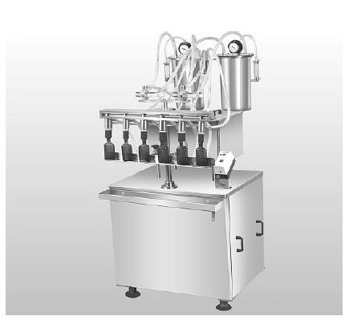
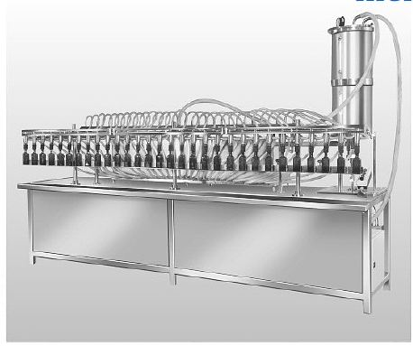
HIGH SPEED LEVEL FILLING MACHINE (Semi-Auto)
Application :Filling Glass/HDPE/Rigid Bottles/Containers/Jars NO. OF FILLING NOZZLES :16, 24, 30 (option available for all models) CONSTRUCTION :S.S. 304/ M.S. construction Option also available Power requirement : 3 HP/3 Phase APPROX. OUTPUT :16 head-120 BPM, 24 Head-160 BPM, 30 Head-180 BPM (on 180 ml Bottle) Automatic Overflow System :The unit will be provided with specially designed S.S. Overflow Collector which will receive the excess liquid sucked back by the filling nozzles from the bottles.
VOLUMETRIC FILLING MACHINE (Semi-Auto)
Application :Filling Glass/HDPE/PET/PVC/Flexible/Rigid Bottles/Containers/Jars Principalvolumetric ConstructionS.S. 304 Construction of contact parts S.S. 304/316 power requirement1 HP no. of cylinder assemblies2 filling range15 ml. to 100 ml./50 ml. to 250 ml/250 ml. to 500 ml./500 ml. to 1000 ml. speedvariable WIDELY USED IN PHARMA/OIL/AGRO CHEMICALS/COSMETIC/FOOD/HOUSEHOLD PRODUCT INDUSTRIES
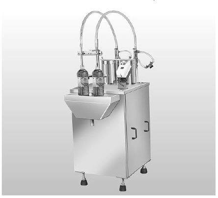
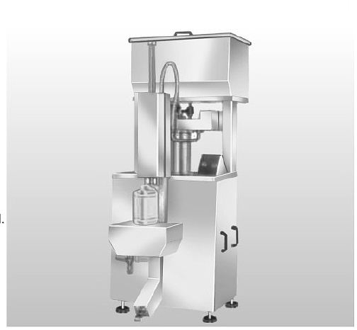
PNEUMATIC FILLING MACHINE (Semi-Auto)
Application :Filling Glass/HDPE/PET/PVC/Flexible/Rigid Bottles/Containers/Jars Principalvolumetric(reciprocating piston filler controlled pneumatically) ConstructionS.S. 304 Construction of contact parts S.S. 304/316 compressed air requirement7 Cfm at 6 Kg/sq. cm filling range500 ml. to 1500 ml./2000 ml. to 5000 ml. nozzlesdiving type nozzles approx. output3 containers on 5000 ml. Operationfoot operated
WIDELY USED IN OIL/AGRO CHEMICALS/HOUSEHOLD PRODUCT INDUSTRIES
*feeding tank shown on the left is option*
ROPP CAPP SEALING MACHINE (Semi-Auto)
Application :Sealing/capping of GLASS/PET/PVC Bottles/Containers/Jars with R.O./ROPP/Tearoff of seals Construction :Cast iron,rollers: 2 nos. threading and 2 nos. sealing power Requirement1 HP/3 phase bottle platformPlatform height adjustable for different shape and size of bottle operationfoot operated(pedal)
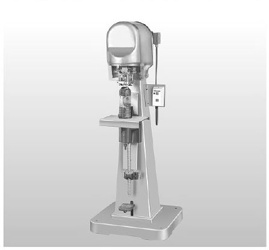
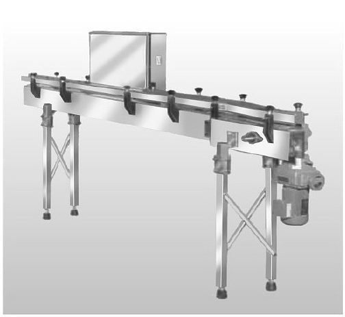
CONVEYOR SYSTEM
Application :Conveying/transfering of empty/filled bottles/containers/jars etc. on packaging lines construction :stainless steel railing - S.S. rods/flats heightadjustable as per requirement speedvariable power requirementdepends on the length of conveyor driveS.S. pipes slat chainimported/Indian S.S. 83 mm. width wear stripUHMW (extruded profile)
INSPECTION-HOOD TYPE
Application :inspection of empty/filled transparent bottles/jars/containers on semi-auto/ automatic packaging lines Construction :S.S. (M.S. option available) dividingnatural/Positive (pneumatically) power requirementdepends upon lenght drivevariable
S.S. drive box with gear box/imported variator-drive length6/8/10/12/15 ft or as required hood heightadjustable
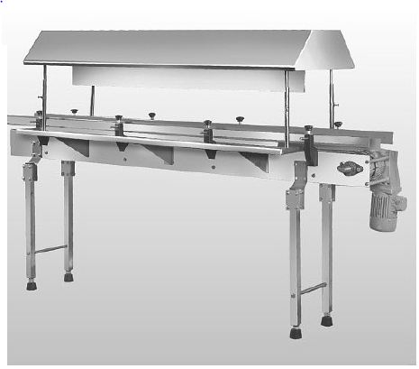
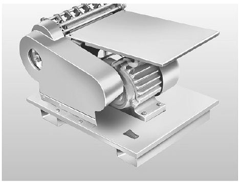
LABEL GUMMING MACHINE
Application :uniform gumming of paper labels with wet glue construction :gumcast: cast iron
fingers/rollers/finger holders/scraper:Bress power requirement0.25 H.R./ single phase width of roller5 inches no. of fingers5
INSPECTION SYSTEM -TILTING TYPE
Application :Inspection of empty/filled round bottles/containers on semi-auto/automatic packaging lines construction :stainless steel dividingpositive pneumatially in case of double side inspection power requirementdepends upon length speedvariable driveS.S. drive box with gear box/imported variator drive tilting60 deg. against acrylic sheet provided on inspection box with tubelight bottle rotation360 deg. for inspection from each and every side modlessingle side inspection and double side inspection
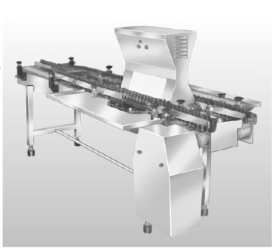
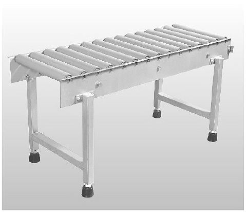
ROLLER CONVEYOR
Application :Conveying/Transfering of empty/filled cartons/crates/boxes in the packaging line construction : M.S. silver /white painted (S.S. option available)
Gravity roller conveyor- aluminium/nylon/PVC height :adjustable roller width :12/18 inches or as required
ROLLER CONVEYOR (Curved)
Application :Conveying/Transfering of empty/filled cartons/crates/boxes in the packaging line construction : M.S. silver /white painted (S.S. option available)
Gravity roller conveyor- aluminium/nylon/PVC height :adjustable roller width :12/18 inches or as required
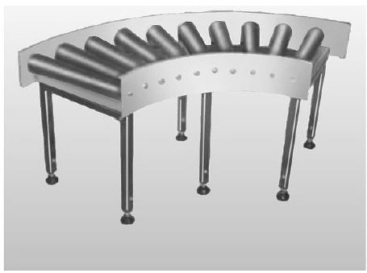
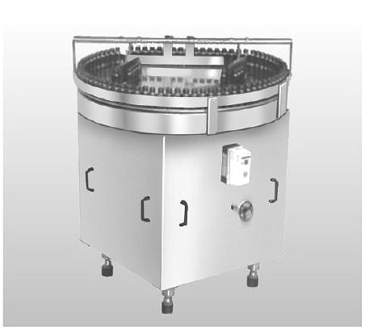
TURN TABLE
Application :used as a scrambler and unscrambler to feed or to collect round bottles/containers/jars to or from the packaging line Construction :Stainless steel Rotary disc construction :stainless steel speed :variable
PACKING BELT CONVEYOR
Application :packing of empty mono carton/cartons/filled/crates/boxes in the packing line constructionM.S. Silver/White painted (S.S. option available) heightadjustable roller width9/12/18/ inches PVC coated canvas /rubber belt.Imported food grade belt also available speedvariable
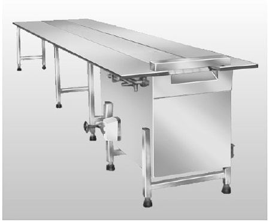
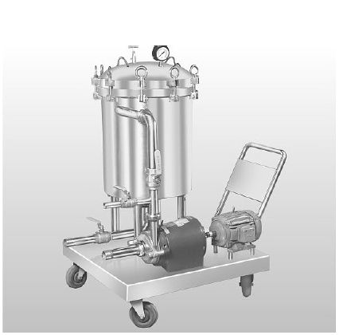
SPARKEL FILTER PRESS
Application :Filtration of liquid.Gives it crystal clear and shining appearance Pumpcentrifugal type(ALFA LAVEL) provided with special bypass arrangement power requirementdepends on th model models14x8/14x12/18x8/18x12/18x15(inchesxinches)
(other models available on request)
ON-OFF Starter fitted on trolley WIDELY USED IN LIQUOR INDUSTRY